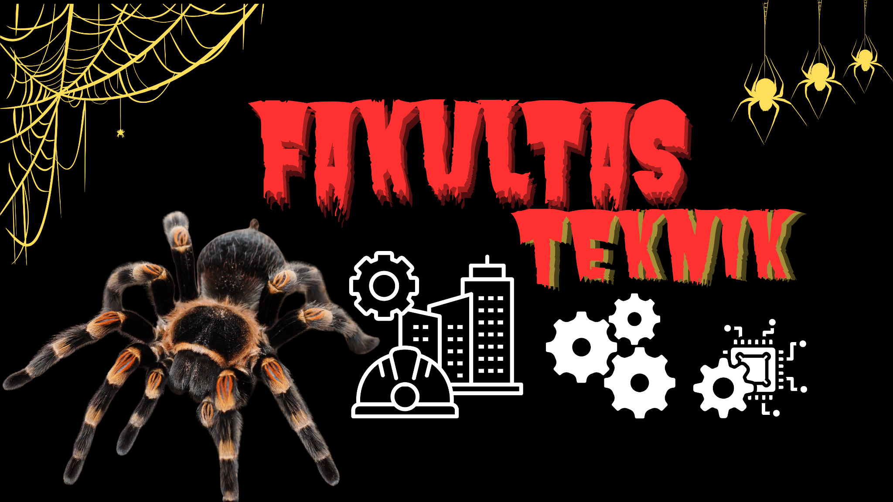

← KEMBALI KE MENU

FILOSOFI TARANTULA (Maskot)
- Bisa hidup dimana saja.
> Yaitu cara kita bertahan hidup atau pergi kemana saja
mau dalam keadaan apapun.
- Membuat jaring hanya satu arah yaitu arah selatan.
> Yaitu kalau kita memulai
sesuatu atau melakukan sesuatu harus optimis, dan mempersiapkan sesuatu harus satu tujuan.
- Walaupun berbadan kecil tidak takut kepada berbadan besar.
> Yaitu bukan hanya
untuk fisik tetapi kita bisa menang dari segi pemikiran atau kecerdasan.
TRIDARMA PERGURUAN TINGGI
- Pendidikan
- Penelitian
- Pengabdian Masyarakat
TUJUAN PERKULIAHAN
- Proses
- Perubahan
- Perkembangan
- Hasil
RUSAK
- Radikal = Pasti
- Universal = Luas untuk pemahaman
- Statistik = Memiliki data
- Analisa = Mencari tahu dengan tegas
- Kreatif = Memiliki cara sendiri
SIKONTOL PANJANG
- SItuasi
- KONdisi
- TOLeransi
- PANdangan
- JANGkauan
LEMBAH HITAM KUNING
Lembah hitam kuning adalah rumah teknik.
- Lembah: Wadah atau tempat menuntut ilmu.
- Hitam: Semakin dalam kita menuntut ilmu maka semakin dalam.
- Kuning: Berhati-hati dalam menuntut ilmu.
.jpg)
"TANAH TEKNIK TANAH BUNDA AKAN KU JAGA SAMPAI MATI"
← KEMBALI KE MENU
KAMI MAHASISWA INDONESIA BERSUMPAH
BERTANAH AIR SATU, TANAH AIR TANPA PENINDASAN
KAMI MAHASISWA INDONESIA BERSUMPAH
BERBANGSA SATU, BANGSA YANG GANDRUNG AKAN KEADILAN
KAMI MAHASISWA INDONESIA BERSUMPAH
BERBAHASA SATU, BAHASA KEBENARAN
Kita adalah satu tidak ada perbedaan diantara kita
Kita tidak pernah mengenal kata lelah
Tunduk tertindas atau bangkit melawan
Karna mundur adalah sebuah penghianatan
"TANAH TEKNIK TANAH BUNDA AKAN KU JAGA SAMPAI MATI"
← KEMBALI KE MENU
FOTO DEKAN
Dekan Fakultas Teknik
Assoc. Prof. Dr. Cut Rahmawati, S.T., M.T., IPM
NIP: 1234567890
FOTO WAKIL DEKAN
Wakil Dekan Fakultas Teknik
Lindawati, S.Si., M.Eng
NIP: 0987654321
FOTO KAPRODI
Kaprodi Teknik Sipil
Muhammad Zardi, S.T., M.T.
FOTO KAPRODI
Kaprodi Teknik Mesin
Dr. Iqbal, S.T., M.T.
FOTO KAPRODI
Kaprodi Sistem Informasi
Ryan Setiawan, S.T., M.Kom.
Tingkat Fakultas
FOTO KETUA DPM
Ketua DPM FT
Abangda Muhammad Raju Kurniawan
Dewan Perwakilan Mahasiswa
FOTO KETUA BEM
Ketua BEM FT
Abangda Teuku Riyan Afiffsyah
Badan Eksekutif Mahasiswa
Ketua Himpunan Mahasiswa
Jurusan
FOTO KAHIM SIPIL
Ketua HIMATESYA
Abangda Riandi
FOTO KAHIM MESIN
Ketua HMM
Abangda Yus Safran
FOTO KAHIM SI
Ketua HIMASI
Abangda Diswanda
Wakil Ketua Himpunan
FOTO WAKAHIM
Wakil Ketua HIMATESYA
Abangda Mu'ammar Nabbhan
FOTO WAKAHIM
Wakil Ketua HIMASI
Abangda Mukhsin
"TANAH TEKNIK TANAH BUNDA AKAN KU JAGA SAMPAI MATI"
← KEMBALI KE MENU
HYMNE TEKNIK
Sebagai Bakti Padamu
Tanah Air Indonesia
Akal Budi Kan Kukembangkan Didalam Jiwa
Panji Persatuan Fakultas Teknik Nan Jaya
Syukur Padamu Tuhan
Anugerah Telah Engkau Berikan
Sebagai Mahasiswa Teknik
Pengembang Mulia Cita-Cita Bangsa Fakultas Teknik Nan Jaya
Sebagai Bakti Padamu
Tanah Air Indonesia
Akal Budi Kan Kukembangkan Didalam Jiwa
Panji Persatuan Fakultas Teknik Nan Jaya
Syukur Padamu Tuhan
Anugerah Telah Engkau Berikan
Sebagai Mahasiswa Teknik
Pengembang Mulia Cita-Cita Bangsa Fakultas Teknik Nan Jaya
Pengembang Mulia Cita-Cita Bangsa Fakultas Teknik Nan Jaya
Link Hymne Teknik
RAP TEKNIK
AKU INI ANAK TEKNIK
MAHASISWA YANG ENERGIK
KENG-KRENG ITU SARAPANKU
MAKANAN PALING BERMUTU
AKU BANGGA JADI ANAK TEKNIK
KARENA AKU YANG TERBAIK
GAYAKU, CARAKU, TINGKAHKU
SELALU JADI PERHATIAN
AKU SUKA SENIOR
SENIOR SUKA AKU
ITU NAMANYA DIBOLAK-BALIK
Link Rapp Teknik
"TANAH TEKNIK TANAH BUNDA AKAN KU JAGA SAMPAI MATI"